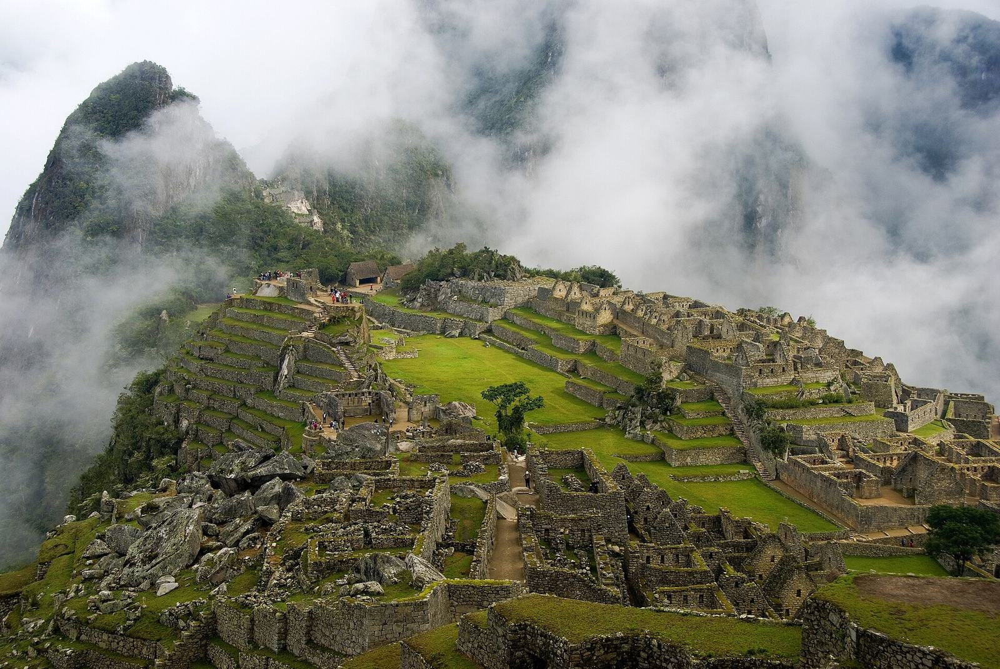

The ridgeline does not care that a website said sold out. Huayna Picchu still stands over the saddle, and the terraces still catch the first light when the cloud in the Urubamba drops. What changed, on 22 September 2026, is the fifteen minutes between choosing a Machu Picchu ticket and paying for it.
I'm Francisco. I design private journeys through Peru, and the question I am getting this month is no longer "is there a ticket?" It is "the screen says sold out — which ticket, and can I still buy one?" This is the practical answer, with the Ministry's own figures. It is not a live board. Availability moves during the day.
Why it looked sold out
For much of 2026 the official site, Tu Boleto, could show an empty calendar while thousands of places sat inside unpaid holds. On 11 September the Ministry of Culture described the old rule in one line: a person could reserve a ticket for three hours without paying. If the payment never came, that place had been invisible to everyone else.
The Ministry pointed to Audit Report No. 007-2026-2-5765-AC. In eight tourism companies the auditors looked at, there were 209,051 reservation operations. Of those, 131,626 — 62.96 percent — were cancelled. Only 73,956, or 35.38 percent, ended in a payment. Culture Minister Alberto Beingolea later told RPP that until about two weeks before his 6 October interview, tickets did not appear because they had been blocked. "What we have done is unblock them," he said, as reported by Andina.
So a search for "Machu Picchu tickets sold out" was often describing a hold, not a full citadel. The daily cap did not rise. The Ministry was clear about that on 22 September: admission stays at 5,600 visitors on high-season days and 4,500 on other days.
What the new ticket system actually does
At 12:08 p.m. on 22 September 2026, the Ministry opened a trial — a marcha blanca — of direct sale with confirmed payment, on Tu Boleto, for the Llaqta of Machu Picchu and the Inca Trail network. The trial lasts 30 calendar days. The Minister, and La República on 8 October, put the end of that test at 22 October 2026. During it, the Ministry is watching whether 15 minutes is the right window. It may be lengthened or shortened afterward. If you are buying after 22 October, read the official notice again before you start.
Until that review, the sequence is the one the Ministry published on 11 September: ticket available, payment confirmed, ticket assigned, ticket issued in the visitor's name. There is no three-hour hold. You choose the date, the circuit, and the hour, and you have a maximum of 15 minutes to finish the purchase. If the payment does not clear, the place goes back on sale by itself.
The same paid-purchase rule covers the Inca Trail network, with one difference the Ministry stated on 22 September: travel agencies still take part in buying those permits. The Trail's own daily cap was left at 750. This page is about the citadel ticket, not the Trail.

The tickets the Ministry said were open
On 6 October, in an interview with RPP reported by Andina, Minister Beingolea gave the stock that had come back into view: more than 1,000 tickets for October, 29,000 for November, and more than 60,000 for December. La República restated those figures on 8 October and described the total as more than 90,000 for the three months. Those are totals across routes and hours, as of that interview. They are not a promise that Huayna Picchu is open on the morning you want, and they are not a live count for today.
October, and the first two days of November, still sit inside the high-season calendar. Resolución Ministerial N.° 000285-2025-MC sets the 5,600-visitor days for 2026 as 1 January, 2–5 April, 19 June through 2 November, and 30–31 December. From 3 November through 29 December the cap is the ordinary 4,500. That is why so much of the released stock sits in November and December: the busy mountain routes were already thin, and the later months had been hidden behind holds.
How to buy Machu Picchu tickets in 2026
Buy only on tuboleto.cultura.pe. That is the Ministry's platform. Decide the visit before you open the clock. Fifteen minutes is enough if the choices are already made, and it is short if you are still comparing mountains.
Have this in front of you before you start:
- The date, and a second date if the first is tight.
- The circuit and the route. They are not the same thing. The list is below.
- The entry hour, and a later hour you would accept.
- The full name of every person, as it will appear on the passport or official ID at the gate. The Ministry issues the ticket in the visitor's name after payment.
- A way to pay that can finish inside the 15 minutes. Do not start the purchase and then go looking for the card.
La República, summarizing the new flow on 8 October, lists the purchase like this. I have kept their order:
- Open the official platform and check availability.
- Select the Llaqta of Machu Picchu.
- Choose the circuit and the route.
- Choose the date and the entry time.
- Enter the visitor details, including where the visitor is coming from.
- Read every name again before you continue.
- Pay within the 15 minutes. If the time runs out, that place returns to the board. Nothing is held under your name.
When the payment is confirmed, the ticket is assigned and then issued. The selection itself is not a reservation. If you would rather not run that clock yourself, you can send me the dates on WhatsApp and I will fold the ticket into a private journey. The steps above are still the official ones.
The circuits, and which ones sell out
Since 1 June 2024 the citadel has been visited on three circuits and ten routes, as the Ministry's Machu Picchu site still lists them. Every ticket is for one route and one entry hour. A sold-out message on one line does not close the others.
Huayna Picchu is not route 3-B. On the official list it is Circuit 3, Route 3-A, Montaña Waynapicchu. Route 3-B is the designed walk of the same Royalty circuit, without the summit. People mix them up because both codes start with 3. They are different tickets, and the 2026 capacity annex gives them very different numbers.
The counts below are daily places in the annex to Resolución Ministerial N.° 000285-2025-MC, the dynamic capacity for 2026. Each figure is online places plus in-person places. High season here means the 5,600-visitor dates, which include all of October and 1–2 November.
| Route | What it is | Places a day |
|---|---|---|
| Circuit 2, Route 2-A | The classic designed walk through the citadel. This is the postcard most people mean. | 1,600 in high season: 100 online and 60 in person at each hour from 6 a.m. to 3 p.m. |
| Circuit 3, Route 3-B | Royalty circuit, designed route. Stone and temples in the royal sector. Not Huayna Picchu. | 1,200 in high season: 110 online and 10 in person at each of those same hours. |
| Circuit 3, Route 3-A | Huayna Picchu, the peak behind the ruins. Official name: Montaña Waynapicchu. | 400, in both seasons: 175 online and 25 in person at 7 a.m., and the same again at 10 a.m. No other entry hour. |
| Circuit 1, Route 1-A | Machu Picchu Mountain, the longer ridge opposite Huayna Picchu. | 350, in both seasons: 175 at 7 a.m. and 175 at 9 a.m., each split as 150 online and 25 in person. |
That is why Huayna Picchu and Machu Picchu Mountain disappear first in October and early November, even in a month when the Minister could still count more than a thousand tickets somewhere on the board. Four hundred places, at two hours only, is a different object from 1,600 places spread across the day. Route 3-B is the opposite case: a large ticket that shares a circuit number with the peak. If 3-B says sold out at 7 a.m., look at a later hour before you decide the month is gone.
Routes 1-C (Inti Punku), 1-D (the Inca Bridge), 3-C (the Great Cavern), and 3-D (Huchuy Picchu) are high-season routes only. The classic lower terrace is Route 2-B, and the upper terrace is Route 1-B. If you only want the citadel, Circuit 2 is the one I start from. The mountain is a separate permit, steep, and the wrong add-on if the hour matters more than the summit.
The visit itself — the gate, the passport, the one-way paths — is on the Machu Picchu page. A private day, with your own guide, is the private Machu Picchu tour.
If it still says sold out
Read the route and the hour before you change the trip. Then work down this list.
- Change the route or the hour, not the country. Circuit 2 and route 3-B have places through the afternoon. A full 7 a.m. Huayna Picchu slot can sit beside an open classic ticket on the same day.
- Look at November after the 2nd, and at December. Those are the months where the Minister's 6 October figures were largest: about 29,000 and more than 60,000. The daily cap is lower then, but the holds that had hidden the calendar are what the new system was built to release.
- Use the in-person window only as a backup, and not for the summit. The Ministry's Machu Picchu site still sells up to 1,000 tickets a day in person at the Centro Cultural in Machu Picchu Pueblo (Aguas Calientes). The August 2025 protocol put that sale at five windows, from 6 a.m. to 10 p.m. or until the thousand are gone, payable by card, QR, or cash in soles. On 6 October the Minister told Andina the in-person sale was still open, at five windows, and moving without the old lines. The same 2026 annex that caps Huayna Picchu at 400 puts only 50 of the 1,000 in-person places on that peak (25 at 7 a.m. and 25 at 10 a.m.). The town window is a weak plan for Huayna Picchu.
- The in-person ticket, on the official site, is for the day after you buy it. If you are using that desk, sleep in Machu Picchu Pueblo. Check the live in-person count at Tu Boleto's availability page before you queue. Older pages do not all describe the hours the same way.
I am not publishing a sold-out calendar on this page. The honest check is the official board, for your route and your hour, on the day you pay.
Match the train to the hour on the ticket
The ticket gets you through the gate. It does not get you to the town. Almost everyone arrives by train at Machu Picchu Pueblo, then takes the bus up to the entrance. Choose a departure that puts you in town with time to spare before the hour printed on the ticket. The railway is a single track. It runs, and it pauses. I have not seen the Ministry say that a late train moves your entry time, so I do not plan as if it does.
The dated note on what the line is doing is the Machu Picchu train status page. Read it before you lock a dawn circuit. How the day sits inside a longer trip is in how many days are worth planning in Peru.
If you want the fifteen minutes handled
TravizPeru can secure the citadel ticket and the train as part of a private journey: your guide, your circuit, your hour, arranged before you fly. I am Francisco Arriz Barrantes, in Lima. TravizPeru is an APOTUR member, code AP030-11. Tell me the dates, who is traveling, and whether Huayna Picchu matters. If that route is already gone, I will say so.
Need the ticket and the train held together? Tell me the dates.
Sources, checked for this page on 9 October 2026:
- Ministry of Culture, 22 September 2026 — trial of direct sale, 15-minute payment, 30 calendar days, caps of 5,600 and 4,500 unchanged, Inca Trail cap of 750 unchanged.
- Ministry of Culture, 11 September 2026 — end of the three-hour hold, ticket issued in the visitor's name, audit figures.
- Andina, 6 October 2026 — the Minister's RPP figures for October, November, and December, the trial through 22 October, and in-person sales.
- La República, 8 October 2026 — the same stock, described as more than 90,000, and the purchase steps.
- Resolución Ministerial N.° 000285-2025-MC and its 2026 capacity annex — high-season dates and the route-by-route places used in the table.
- Official circuit and route list.
- Official in-person sale page — up to 1,000 tickets a day, for entry the following day — and the 1 August 2025 in-person protocol.